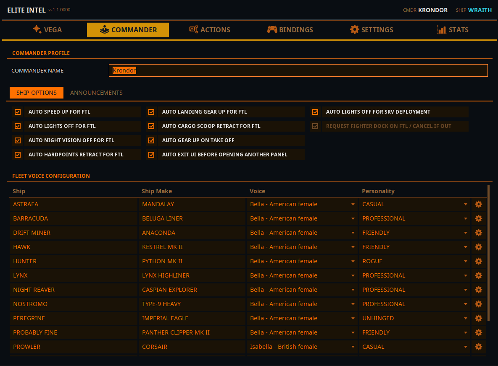
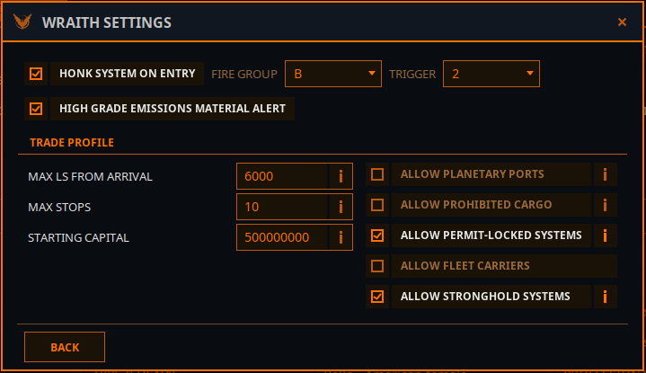
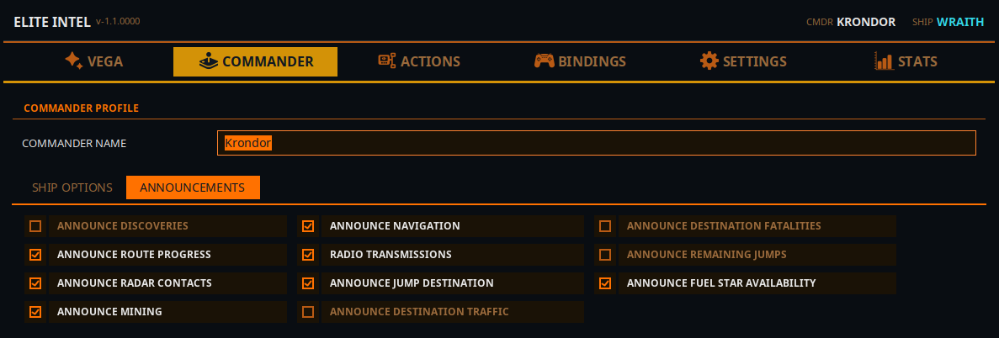

Reiter Kommandant
 Wer du bist, mit
welcher Stimme jeder Rumpf deiner Flotte spricht, was dein Schiff automatisch für dich erledigt,
was Vega dir ungefragt mitteilt, und der Exo-Meisterschaft-Katalog.
Wer du bist, mit
welcher Stimme jeder Rumpf deiner Flotte spricht, was dein Schiff automatisch für dich erledigt,
was Vega dir ungefragt mitteilt, und der Exo-Meisterschaft-Katalog.

Oben sitzt der Streifen Kommandantenprofil; darunter liegen vier Unterreiter: Flottenverwaltung, Globale Schiffseinstellungen, Ansagen und Exo-Meisterschaft.
Kommandantenprofil
Kommandant-Name — der Name, mit dem Vega dich ab und zu anspricht. Nutze ihn, wenn Vega deinen Spielnamen verstümmelt oder du einfach anders genannt werden willst. Gespeichert wird mit Enter oder beim Wegklicken.
Mich ansprechen — ausgeschaltet spricht Vega dich gar nicht an: kein Name, kein Rang, kein Titel.
Der Journal-Ordner liegt unter Einstellungen → Allgemein, der Belegungsordner im Reiter Bindings.
Flottenverwaltung
Eine Zeile pro Schiff, das du besitzt, gefolgt von deinem Flottenträger und Schwadronsträger, falls vorhanden. Elite Intel erkennt deine Flotte aus dem Spieljournal; du fügst nie Schiffe von Hand hinzu. Fliegst du mehrere Kommandanten auf einem PC, folgt die Liste dem gerade im Spiel geladenen Kommandanten.
| Spalte | Hinweise |
|---|---|
| Schiff | Der Name deines Schiffs (bei einem Träger: Name und Rufzeichen) |
| Schiffsmodell | Der Rumpftyp, oder Flottenträger / Schwadronsträger |
| Stimme | Anklicken zum Auswählen. Eine Änderung spielt sofort eine Zeile in dieser Stimme ab, damit du sie probehören kannst |
| Persönlichkeit | Professionell · Locker · Freundlich · Unberechenbar · Seven of Nine · Großmaul-Söldner · Dein Ex-Freund · Deine Ex-Freundin · Draufgängerisch |
| ⚙ | Öffnet die Einstellungen dieses Schiffs (siehe unten) |
Zur Stimmenliste. Angeboten wird jede Stimme der Sprachausgabe, die in Einstellungen → KI-Dienste gewählt ist, männlich wie weiblich — die gewählte Stimme entscheidet auch, ob Vega auf diesem Schiff von sich als er oder sie spricht.
- Kokoro und Supertonic 3 (lokal) — beschriftet als
Name - Akzent. - Google (Cloud) — beschriftet als
Name - Akzent · HDoder· Standard. Auf Englisch unterscheidet der Akzent die Stimmen. In jeder anderen Sprache wird jede Stimme in dieser Sprache erzeugt, daher zeigt die Beschriftung Geschlecht und Qualitätsstufe statt eines irreführenden englischen Akzents. - Microsoft Edge (Cloud) — beschriftet als
Name - Akzent.
Ein Wechsel der Sprachausgabe setzt die Stimme jedes Schiffs auf die Standardstimme der neuen Engine zurück. Die Persönlichkeiten bleiben erhalten. Die App fragt vorher nach.
Träger-Zeilen haben eine Stimme und sonst nichts — ein Träger wird nicht von Vega bemannt, er hat also weder Persönlichkeit noch Einstellungen. Die Stimme ist die, mit der seine Flugkontrolle über Funk antwortet. Steht sie auf Zufällig, antwortet jedes Mal ein anderer Lotse; wählst du eine, wird die Hörprobe als Funkspruch abgespielt, denn nur so wirst du sie je hören.
Schiffseinstellungen (der ⚙-Knopf)
Einstellungen pro Schiff, denn eine Bergbau-Python und eine Kampf-Corvette wollen nicht dasselbe Verhalten. Änderungen werden gespeichert, wenn du den Dialog mit Zurück schließt.

System beim Eintritt scannen — führt beim Eintreffen in einem System einen Entdeckungsscan aus. Wähle die Feuergruppe (A–H) und den Auslöser (1 oder 2), auf dem dein Entdeckungsscanner liegt. Ist dein HUD im Kampfmodus, wechselt Elite Intel in den Analysemodus, scannt und wechselt zurück.
Fahrzeugbuchten — was du in jeder Bucht des Fahrzeughangars hast (Bucht 1–4: Leer, Scarab, Scorpion oder Rhino). Das Journal nennt den Hangar, aber nie seinen Inhalt; so öffnet „SRV ausfahren“ die richtige Bucht — und weiß, ob das Schiff vorher landen muss (Scarab, Scorpion) oder schweben darf (Rhino). Es werden immer alle vier Buchten angezeigt, egal welcher Hangar eingebaut ist, damit deine Auswahl einen Umbau übersteht.
Materialhinweis bei hochwertigen Emissionen — meldet, wenn ein Signal mit hochwertigen Emissionen im System Materialien trägt, für die sich ein Halt lohnt.
Handelsprofil — die Vorgaben, an die sich Elite Intel beim Planen einer Handelsroute für dieses Schiff hält. Jede davon lässt sich auch per Stimme setzen: „Handelsprofil maximale Stopps ändern vier“.
| Einstellung | Bedeutung |
|---|---|
| Planetare Häfen erlauben | Oberflächenhäfen in Routen aufnehmen |
| Verbotene Waren erlauben | Waren aufnehmen, die irgendwo auf der Route illegal sind |
| Genehmigungspflichtige Systeme erlauben | Systeme aufnehmen, die eine Genehmigung erfordern |
| Flottenträger erlauben | Flottenträger von Spielern als Märkte aufnehmen |
| Hochburgsysteme erlauben | Thargoiden-/Machthochburgen aufnehmen |
| Max. Ls vom Eintritt | Wie weit eine Station vom Ankunftsstern entfernt sein darf |
| Max. Stopps | Anzahl der Etappen der Route |
| Startkapital | Credits, die der Routenplaner ausgeben darf |
Wie Routen geflogen werden, steht unter Handel & Profit.
Globale Schiffseinstellungen
Automatisierungen, die Vega für dich ausführt, auf jedem Schiff. Jede ist ein einfacher Schalter, der sofort speichert. Nützlich für alle und für Kommandanten mit Behinderungen eine echte Erleichterung.
| Schalter | Was er tut |
|---|---|
| Für FSD-Sprung automatisch beschleunigen | Gibt vor einem Sprung Schub |
| Lichter für FSD-Sprung automatisch ausschalten | Schaltet vor einem Sprung die Schiffslichter aus |
| Nachtsicht für FSD-Sprung automatisch ausschalten | Schaltet vor einem Sprung die Nachtsicht ab |
| Waffen für FSD-Sprung automatisch einfahren | Fährt vor einem Sprung die Waffen ein |
| Fahrwerk für FSD-Sprung automatisch einfahren | Fährt vor einem Sprung das Fahrwerk ein |
| Frachtgreifer für FSD-Sprung automatisch einfahren | Fährt vor einem Sprung die Frachtschaufel ein |
| Fahrwerk beim Start automatisch einfahren | Fährt nach dem Abheben das Fahrwerk ein |
| Lichter beim SRV-Aussetzen automatisch ausschalten | Schaltet die Lichter aus, wenn du den SRV aussetzt |
| Nächsten Neutronensprung beim Kegel-Boost automatisch plotten | Auf einer Neutronenroute wird der nächste Neutronen-Wegpunkt geplottet, sobald du durch den Kegel geboostet hast |
Ansagen
Alles, was Vega ungefragt sagt, an einem Ort — ein einziger Bildschirm, wenn etwas zu viel redet oder zu wenig.

| Schalter | Was du hörst |
|---|---|
| Entdeckungen ansagen | Bemerkenswerte Körper, Erstentdeckungen, biologische Signale. Steuert auch die Exobiologie-Karte im HUD-Overlay |
| Planetenanflug ansagen | Fakten über den Körper, den du anfliegst |
| Radarkontakte ansagen | Schiffe, die auf dem Scanner auftauchen |
| Bergbau ansagen | Prospektortreffer und Materialfunde für deine Abbauziele |
| Frachtschaufel-Aufnahmen ansagen | Was du gerade eingesammelt hast |
| Navigation ansagen | Navigationsereignisse und Ankünfte |
| Funkübertragungen | Funkverkehr in der Spielwelt, gesprochen mit eigenen Funkstimmen |
| Routenansagen | Hauptschalter für alles, was rund um einen Sprung gesagt wird. Die Schalter darunter wirken nur, solange er an ist |
| ↳ Sprungziel ansagen | Was das nächste System ist |
| ↳ Verkehr am Ziel ansagen | Verkehrsberichte für dein Ziel |
| ↳ Verluste am Ziel ansagen | Jüngste Todesfälle im Zielsystem |
| ↳ Ankunft ansagen | Eine Zeile bei der Ankunft |
| ↳ Verbleibende Sprünge ansagen | Verbleibende Sprünge der Route |
| ↳ Verfügbarkeit von Treibstoffsternen ansagen | Ob das Ziel einen schöpfbaren Stern hat — gesprochen als Teil der Zeile zu den verbleibenden Sprüngen |
Die meisten lassen sich auch per Stimme umschalten („Radar Ansagen aus“, „alle Ansagen ausschalten“), daher liest die Seite sie bei jedem Öffnen des Reiters neu ein.
Exo-Meisterschaft
Ein Katalog von Sternsystemen nahe der Blase, deren Planeten hochwertige Exobiologie tragen, gesammelt von der Community über Spansh.
- Drücke Exo-Meisterschaft aktivieren. Der Katalog wird heruntergeladen und importiert, jede Hälfte mit eigenem Fortschrittsbalken.
- Ist er geladen, zeigt die Seite Sternsysteme, Planeten und Monde, den Erwarteten Wert des ganzen Katalogs und wie viel davon du Abgeerntet hast.
- Im Flug sagst du „bring mich zum nächsten Exobiologie-Ziel“, und Vega plottet einen Kurs zum reichsten System, das du noch nicht abgeerntet hast.
Fertige Planeten werden beim Scannen abgehakt. Was du vor der Installation von Elite Intel beprobt hast, kannst du per Stimme abschreiben — „wir haben diesen Körper bereits beprobt“ oder für ein ganzes System „markiere dieses System als abgeerntet“.
Exo-Meisterschaft deaktivieren entfernt den Katalog nach Rückfrage von deinem Rechner. Bereits abgeerntete Planeten bleiben gespeichert, damit ein späteres Aktivieren dich nicht wieder dorthin schickt.
Community 👉Matrix👈